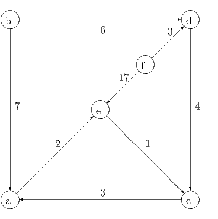

where all the parameters c, w, and b are positive integers. Construct a Dantzig-Wolfe approach to this problem, where integrality is imposed in the subproblem but not in the master problem. The equality constraints should be in the master problem and the inequality constraints should be handled through the subproblem. Your formulation should be disaggregated. What is your criterion for optimality in the master problem?
Solution:
Since all variables are binary, there are no rays. We let
the set of feasible solutions to a binary knapsack problem. Every point in Xj is an extreme point of the convex hull of Xj, since x is binary. Let the Kj points of Xj be
Let λjk be the convex multiplier associated with point zjk. Let
The Master Problem can then be written
where we’ve exploited the fact that each zjk is a binary vector. The dual to the Master Problem is
Given a (,), need to check dual feasibility. There is a separate subproblem for each j = 1,…,n, each a knapsack problem:
where we’ve exploited the definition of jk. The solution to Master Dual is feasible and hence the solution to the Master Problem is optimal if vj ≤j for j = 1,…,n.

One unit of commodity A must be shipped from b to c and one unit of commodity B must be shipped from f to e. The cost of shipping one unit of flow along an arc is indicated in the figure. The cost is the same for each commodity. Each arc e ∈ E in the graph has capacity equal to one; this is the maximum total flow along the arc for the combination of the two commodities. Used the path-based formulation to find the minimum cost total flow. What is the optimal integral flow?
Solution:
The following are the valid paths:
- Paths from b to c:
- b - d - c, cost 10. Variable f1A.
- b - a - e - c, cost 10. Variable f2A.
- Paths from f to e:
- f - e, cost 17. Variable f1B.
- f - d - c - a - e, cost 12. Variable f2B.
LP formulation:

It follows that the optimal solution is f1A = f 2A = f 1B = f 2B = 0.5, with value 24.5. The optimal integral value is 27, achieved by f1A = 1, f 2A = 0, f 1B = 1, f 2B, and by f 1A = 0, f2A = 1, f 1B = 1, f 2B.

Use the initial basic feasible solution with basic variables x12 = 1,x34 = 1,x41 = 1 and nonbasic variables x13 = 0,x23 = 1,x24 = 0. You should need three iterations.
Solution:
The initial solution is

Calculate dual variables from complementary slackness on basic edges. Take π0 = 0, solve πj - πi = cij for basic edges.

We need πj - πi - yij ≤ cij for each edge (i,j) for dual feasibility, with equality for arcs at their upper bound and yij = 0 for arcs at their lower bounds. Calculate y values for nonbasic edges:
We need yij = 0 for nonbasic arcs at their lower bounds, so arcs (1, 3) and (2, 4) are both candidates to enter the basis. We choose to bring (1, 3) into the basis. Flow is adjusted around the cycle 1 - 3 - 4 - 1.

We have to take ϵ = 0 and arc (3, 4) leaves the basis. The updated solution is:

Calculate dual variables from complementary slackness on basic edges. Take π0 = 0, solve πj - πi = cij for basic edges.

We need πj - πi - yij ≤ cij for each edge (i,j) for dual feasibility, with equality for arcs at their upper bound and yij = 0 for arcs at their lower bounds. Calculate y values for nonbasic edges:
We need yij = 0 for nonbasic arcs at their lower bounds, so arc (2, 4) is a candidate to enter the basis. Flow is adjusted around the cycle 1 - 2 - 4 - 1.

We have to take ϵ = 0 and arc (1, 2) leaves the basis. The updated solution is:

Calculate dual variables from complementary slackness on basic edges. Take π0 = 0, solve πj - πi = cij for basic edges.

We need πj - πi - yij ≤ cij for each edge (i,j) for dual feasibility, with equality for arcs at their upper bound and yij = 0 for arcs at their lower bounds. Calculate y values for nonbasic edges:

We need yij ≥ 0 for nonbasic arcs at their upper bounds, so arc (2, 3) is a candidate to enter the basis. Flow is adjusted around the cycle 1 - 3 - 2 - 4 - 1.

We have to take ϵ = 1 and arc (2, 3) moves from being nonbasic at its upper bound to being nonbasic at its lower bound. The updated solution is:

Calculate dual variables from complementary slackness on basic edges. Take π0 = 0, solve πj - πi = cij for basic edges.

We need πj - πi - yij ≤ cij for each edge (i,j) for dual feasibility, with equality for arcs at their upper bound and yij = 0 for arcs at their lower bounds. Calculate y values for nonbasic edges:
Since arc (2, 3) is nonbasic at its lower bound, we can have c23 - π3 + π2 > 0 and can take y23 = 0. The other two nonbasic arcs are at their upper bound, so it is OK to have y12 > 0 and y34 > 0.
Thus, we are optimal.
Solution:
It is given that the cost of pushing xij units of flow along arc (i,j) is given by a piecewise linear function of the form

where the function consists of kij + 1 line segments and where cij1 < c ij2 < … < c ijkij+1. We can represent the problem as a problem with linear costs by introducing an extra 2kij edges and kij vertices for each original edge. Edge (i,j) is replaced by the complex below:

Solution:
Assume xv0v1 is fractional. Since all the capacities and demands are integral, there must be another edge (v1,v2) with xv1v2 fractional. Since bv2 is integral, can find another (v2,v3) with xv2v3 fractional. By continuing this process, a vertex will eventually be repeated, giving a cycle, with every edge on the cycle having fractional flow.
Flow can be increased or decreased around this cycle, while still maintaining feasibility. Since the current flow is optimal, the cost of the cycle must be zero. Decreasing the flow around the cycle will drive at least one xe value to an integral value, while only modifying fractional values.
If the resulting flow is still fractional, we can repeat this process, eventually obtaining an integral optimal flow.
The costs are identical for each commodity. 25 units of commodity A need to be moved from node 1 to node 3. 20 units of commodity B need to be moved from node 5 to node 3. 20 units of commodity C need to be moved from node 4 to node 1. The current set of paths consists of 1 → 2 → 3 and 1 → 5 → 4 → 3 for commodity A, 5 → 2 → 3 for commodity B, and 4 → 5 → 1 for commodity C. Use the path based approach described in class to show that this is not an optimal set of paths. What is the optimal solution?
Solution:

Need to set up linear programming formulation, so need to calculate costs of the paths:
The LP is

Optimal solution is
Dual problem is

From complementary slackness, dual solution is
with
The subproblems require solving shortest path problems for each commodity, with costs c + w:

Shortest paths with the modified costs:
- Commodity A: 1 - 2 - 4 - 3, cost 24 < σA = 25.
- Commodity B: 5 - 4 - 3, cost 14 < σB = 23.
- Commodity B: 4 - 2 - 1, cost 18 < σC = 19.
All three paths have negative reduced cost. Add the one with the most negative reduced cost, namely path 5 - 4 - 3 for Commodity B. The cost of this path is c45 + c34 = 14. The updated primal LP is

Optimal solution is
Updated dual problem is

From complementary slackness, one dual solution is
with
(There are multiple dual optimal solutions, with 25 ≥ σA = 16 + w12, w12 ≥ 0.)
The subproblems require solving shortest path problems for each commodity, with costs c + w:

Shortest paths with the modified costs:
- Commodity A: 1 - 2 - 3, cost 17 = σA.
- Commodity B: 5 - 4 - 3, cost 14 = σB.
- Commodity B: 4 - 2 - 1, cost 19 = σC.
Thus, no path has negative reduced cost, so we are dual feasible in the full problem, so we are optimal.